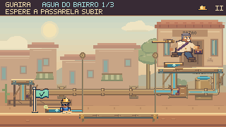
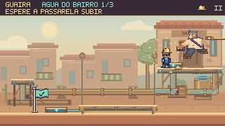
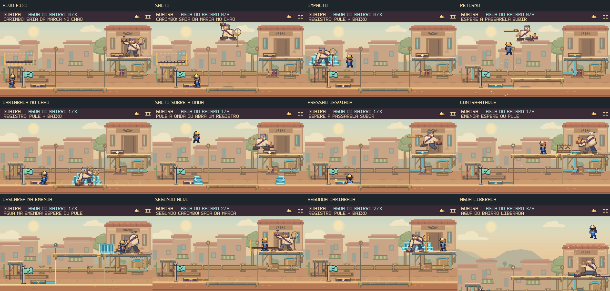

Revisão mais recente: jatos em duas alturas e interrupções pelos registros →
O prefeito entra
na arena.
O confronto final ganhou ataques direcionados, saltos entre os patamares, ondas de pressão e uma sequência dupla. A luta usa os controles, a sentada, a plataforma e a física do próprio jogo.
Atrair, escapar e contra-atacar
O alvo fica marcado antes do salto e permanece no mesmo lugar. Após a carimbada, Feka pode bater em um registro para desviar a pressão, subir pela plataforma e alcançar as costas expostas. Nas etapas seguintes, é preciso lidar com a onda que atravessa o piso e com a descarga anunciada na emenda.
Partida executada com comandos de teclado, sem reposicionar personagens ou alterar a vida. Simulação e captura a 60 quadros por segundo; vídeo sem áudio. O trajeto é ensaiado e não representa o tempo de uma primeira tentativa.
Três etapas, decisões diferentes
| Etapa | O prefeito faz | O jogador pode fazer |
|---|---|---|
| Primeiro lacre | Marca um destino e salta para carimbar o piso. | Aprender a esquiva e o ciclo registro → plataforma → golpe por cima. |
| Segundo lacre | A carimbada produz ondas; a emenda anuncia uma descarga durante a abertura. | Saltar a onda, desviar a pressão ou usar o patamar. Esperar fora da emenda ou saltar por ela. |
| Último lacre | Encadeia duas carimbadas com alvos independentes e libera ondas mais rápidas. | Reagir à segunda marca e abrir um registro depois do último impacto. |
Duas maneiras de abrir o caminho


O apoio à esquerda, as conexões do segundo registro e as bordas dos patamares acompanham os objetos físicos. O ataque respeita a altura do piso de destino. Uma abertura perdida dá início a outro ciclo; a água pública só é liberada ao remover o terceiro lacre.
Outra partida: usar o balcão e antecipar o contra-ataque
Alternativa: esperar a descarga terminar
Peso, movimento e água legível
As pernas agora caminham, recolhem no salto e estendem na chegada. O impacto comprime a postura; o retorno e o recuo têm poses próprias. As cristas da água usam o mesmo contorno em degraus no desenho e na colisão. Os cantos vazios são seguros, e os avisos não desaparecem com movimento reduzido.

Referência anterior à reformulação
Código anterior preservado e executado com seu percurso original, também capturado a 60 fps. As partidas têm comandos e durações diferentes porque o encontro mudou.
Verificação no jogo
Três percursos completos sem dano, teclado e toque simulado, movimento reduzido, variações de timing, dano real, reinício, pausa e sincronização dos sons com os ataques. A comparação entre cada pixel da água e sua colisão cobre tanto o impacto quanto as ondas.
As oito cenas de Guaíra foram concluídas no navegador; as cinco etapas principais persistiram normalmente. O resultado técnico e as limitações estão no registro de verificação.
Essas verificações demonstram execução, clareza dos sinais e integração. Diversão, descoberta das estratégias e dificuldade para jogadores novos ainda precisam de sessões com pessoas.
Critérios e reprodução · Percursos e capturas · Conclusão no capítulo · Revisão anterior: Subida